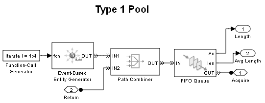

Resource Allocation from Multiple Pools
Contents
Overview
This model demonstrates a technique for allocating resources from a resource pool. It also shows how to choose a pool from which to draw a resource based on a given criteria.
Structure of the Model
There are two main components of the model.
- Request Generation and Queueing
- Resource Pools and Resource Allocation
Request Generation and Queueing
The Entity Generator block generates requests using a Uniform distribution. In order for these requests to be acted upon, they require a resource from one of the two resource pools. Each of the requests has an attribute that specifies the kind of resource it requires. The requests move to one of the queues dedicated for each type of resource pool.
Resource Pools and Resource Allocation
The model has two resource pools,Type 1 and Type 2, as shown in the blue and yellow regions. The Type 1 and Type 2 Pool subsystems model the pools. These pools hold the resources before and after their use. The size of each pool is defined in the corresponding subsystem's mask dialog. The resources are created and stored using the preloaded queue technique; see the Preloaded Queue with Entities demo for details.
Results and Displays
This model includes the following plots.
- The Pending Type 1 Requests and Pending Type 2 Requests plots show the number of requests waiting for resources from the corresponding pools. You can see that more requests for Type 1 resources wait compared to requests for Type 2 resources.
- The Type 1 Resources Available and the Type 2 Resources Available plots show the instantaneous values of the number of resources available for use in the corresponding resource pools.
- The average wait times for requests for each of the resource pools are captured in workspace variables from the statistics of the Type 1 Request Queue and Type 2 Request Queue blocks.
Average Wait Time for Type 1 Resources:
ans =
9.3810e-004
Average Wait Time for Type 2 Resources:
ans =
2.2609e-004
Average Number of Available Type 1 Resources:
ans =
2.1182
Average Number of Available Type 2 Resources:
ans =
3.8357
The model has the following configuration:
- Resource request distribution: Type 1 = 0.4, Type 2 = 0.6
- Duration of Type 1 resource use : 0.05
- Duration of Type 2 resource use : 0.07
- Type 1 pool size : 4
- Type 2 pool size : 8
From the above results, you can see that the larger pool size of Type 2 resources results in a lower average wait time even with a higher request rate and longer duration of resource use.
Experimenting with the Model
To vary system behaviors, like the number of resources available and wait times for resources, change the following settings:
- The Probability vector parameter in the Event-Based Random Number Resource Type Required block for changing the generation rate of the requests.
- The Service time parameter of the Infinite Server blocks in the Resource Pool and Resource Allocation regions of the model for changing the duration of the resource usage.
- The Size of resource pool parameter in the Type 1 Pool and Type 2 Pool subsystems to change the number of resources in the pool.